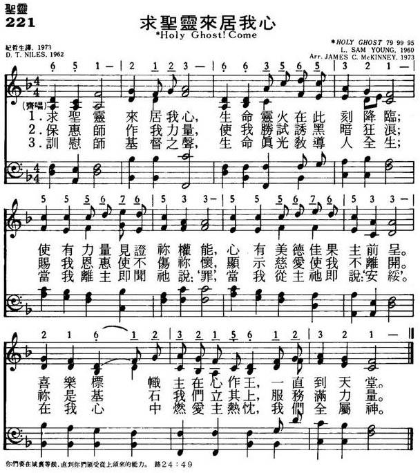

LX1773
Holy Ghost! Come
221求圣灵来居我心
[亞印]
|
|
|
|
|
221求圣灵来居我心
1.求圣灵来居我心，生命灵火在此刻降临；
使有力量见证你权能，
心有美德佳果主前呈。
喜乐标帜主在心作王，一直到天堂。
2.保惠师作我力量，使我胜试诱黑暗狂浪；
赐我恩惠使不伤你怀，
显示慈爱使我不离开。
你是基石我们立其上，服务满力量。
3.训慰师基督之声，生命真光教导人全生；
当我离主及闻他说“罪”，
当我从主他即说“安绥”。
在我心中燃爱主热忱，我们全属神。
|
|
https://www.mred365.cn/szxg/7224.html
 |
|
|
|

LX1773
Holy Ghost! Come
221求圣灵来居我心
[亞印]
L01C
印度
India
教會詩歌
https://hymnary.org/person/Niles_DT
奈尔斯是斯里兰卡（原称锡兰）的一位第4代基督徒。他的曾祖父是最早受洗入教的泰米尔人②。奈尔斯神学毕业后即任卫斯理公会牧师，兼任基督教学生运动执行干事，致力于传道并神学教育工作和教会合一运动。他曾在世界基督教学生同盟、国际基督教协会、世界基督教青年会任职，并曾参加历届普世基督教会议。1938年他在印度马德拉斯国际基督教会议上是最年轻的代表，30年后他又在瑞典首都乌普萨拉会议上代替被杀害的美国黑人牧师马丁。路德。金向大会发言。他曾是世界基督教联合会的六主席之一。
奈尔斯在生命最后的十余年中，大力推进亚洲教会的彼此联合、团契。1957年东亚基督教协会（East
Asia Christian Conference,简称“亚协”EACC）成立，他是主要发起人并任首任总干事。他又是一位杰出的诗人。在他担任总干事期间，于1964年出版了一本《亚协赞美诗》（简称为《亚协诗》，EACC
Hymnal）。编辑该诗的目的是希望通过介绍亚洲各国教会的诗歌，促使亚洲教会更好地联合在一起，
https://www.wikiwand.com/en/D._T._Niles
http://www.bu.edu/missiology/missionary-biography/n-o-p-q/niles-daniel-thambyrajah-1908-1970/
Upon the Earth– 1962 by Daniel Thambyrajah Niles
(Author),
E. A. C. C. Hymnal
Music Editor:
Dr. John Milton Kelly
General Editor:
Dr. Daniel Thambyrajah Niles
Publisher:
East Asia Christian Conference, Kyoto,
Japan, 1963